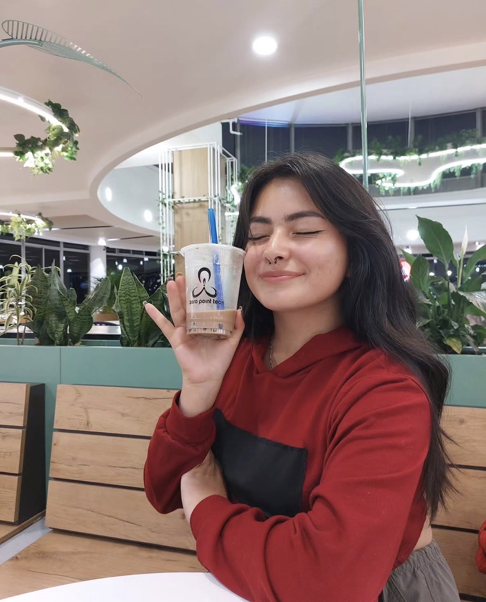

PipelineLab
Aplicación en Python y Flask para limpiar, validar y transformar archivos CSV con enfoque en datos limpios y listos para usar.
Hola, soy
Desarrolladora de Software en formación
Aprendiendo, creando y mejorando con cada proyecto.
Ver mi trabajo →
Soy estudiante de Ingeniería de Sistemas apasionada por crear soluciones que combinen desarrollo de software, bases de datos y diseño funcional. Disfruto desarrollar aplicaciones, conectar interfaces con APIs y transformar ideas en proyectos reales mientras sigo aprendiendo nuevas tecnologías.
Más sobre mí →¡Hola! Soy Sophie 🤍
Soy estudiante de Ingeniería de Sistemas y disfruto crear aplicaciones que resuelvan problemas reales. Me apasiona el desarrollo de software y constantemente busco aprender nuevas tecnologías mientras construyo proyectos que integran frontend, backend y bases de datos.
En mi trayectoria académica he trabajado con Java, Kotlin, PHP, MySQL, HTML, CSS y Git, desarrollando aplicaciones web y móviles, implementando APIs y gestionando bases de datos. Cada proyecto ha sido una oportunidad para mejorar mi lógica de programación, fortalecer mis habilidades técnicas y adquirir experiencia práctica.
Más allá del código, mi experiencia en atención al cliente me enseñó la importancia de la comunicación, la empatía y el trabajo en equipo. Creo que un buen desarrollador no solo escribe código de calidad, sino que también entiende las necesidades de las personas y trabaja en conjunto para construir mejores soluciones.
En este momento, busco realizar mis prácticas profesionales para seguir creciendo como desarrolladora, aportar valor a nuevos proyectos y continuar aprendiendo dentro de un entorno profesional.
Desarrollo de aplicaciones web y móviles utilizando Java, Kotlin y PHP, aplicando programación orientada a objetos y buenas prácticas de desarrollo.
Diseño y gestión de bases de datos relacionales con MySQL, implementación de operaciones CRUD e integración con aplicaciones mediante APIs.
Siempre estoy explorando nuevas tecnologías, desarrollando proyectos personales y fortaleciendo mis habilidades mediante la práctica constante.
Tecnologías que utilizo para desarrollar aplicaciones web y móviles, gestionar bases de datos y construir soluciones funcionales.
Desarrollo aplicaciones web y móviles, implemento bases de datos relacionales y consumo APIs para crear soluciones funcionales. Me gusta aprender construyendo proyectos que integren diferentes tecnologías.
Desarrollo aplicaciones web utilizando HTML, CSS, JavaScript y PHP, priorizando interfaces funcionales y una buena experiencia de usuario.
Diseño e implemento bases de datos relacionales en MySQL, desarrollando operaciones CRUD e integrándolas con aplicaciones mediante APIs.
Desarrollo aplicaciones utilizando Java y Kotlin, aplicando programación orientada a objetos, consumo de APIs y buenas prácticas de desarrollo.
Estos son algunos de los proyectos que he desarrollado durante mi formación académica. Cada uno representa un reto diferente que me permitió fortalecer mis habilidades en desarrollo de software, bases de datos e integración de tecnologías.
Aplicación en Python y Flask para limpiar, validar y transformar archivos CSV con enfoque en datos limpios y listos para usar.
Sistema de agendamiento veterinario con CRUD y base de datos relacional, pensado para gestionar citas y usuarios de forma simple.
Pipeline en Python para extraer, limpiar y transformar datos de movilidad, con enfoque en organización y análisis.
Procesos de limpieza y preparación de datos para entornos de gran volumen, enfocados en calidad y consistencia.
Aplicación full stack para visualizar datos y métricas de recursos humanos: frontend en TypeScript y backend en Python trabajando juntos.